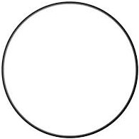
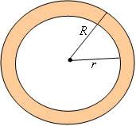
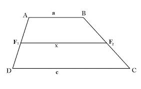
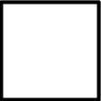

Escolha sua forma favorita e vamos nessa!
Círculo
O círculo é uma forma geométrica perfeita e simétrica, composta por todos os pontos equidistantes de seu centro. É uma figura amplamente usada na geometria e na ciência.
Tronco da Pirâmide
O tronco da pirâmide é um sólido intrigante, formado por uma secção transversal paralela à base, com faces laterais trapezoidais e bases poligonais. É uma forma tridimensional com propriedades únicas.

Retângulo
O retângulo é uma forma familiar com ângulos retos e lados opostos iguais. É amplamente usado na arquitetura e na vida cotidiana para criar estruturas sólidas e funcionais.

Coroa do círculo
A coroa do círculo é um exemplo de formas concêntricas, onde várias circunferências compartilham o mesmo centro. Ela é composta por dois círculos, um interno e outro externo, criando um espaço anular.
Trapezoide irregular
O trapézio irregular desafia nossa compreensão da geometria. É uma forma trapezoidal com lados de comprimentos diferentes, apresentando propriedades únicas.
Polígono Regular
Escolha o número de lados e explore os polígonos regulares, como o pentágono, hexágono ou heptágono. Essas formas têm ângulos e lados uniformes, criando figuras geométricas fascinantes.

Quadrado
O quadrado é um clássico da geometria, com todos os lados iguais e ângulos retos. É uma forma simples e simétrica amplamente usada em diversos contextos..
Setor circular
Explore um setor do círculo, que é uma porção de uma circunferência com um ângulo central específico. Essa forma apresenta propriedades interessantes relacionadas a ângulos e áreas.